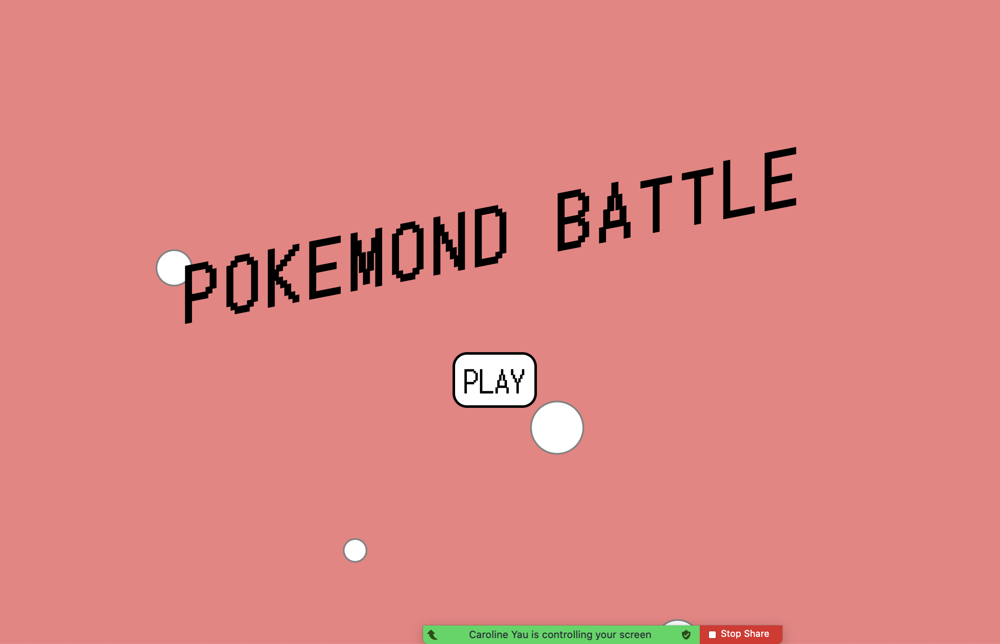

Project Summary:
My final project is Pokemond Battle, it is a continution from Game On! but with swist. Pokemond Battle is a two player game where the first to reach 15 points win. Each player takes turn "throwing" a pokeball and a random pokemon will show up; depending on the pokemon the player either gain plus or minus points.
